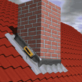
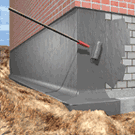
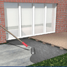
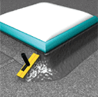
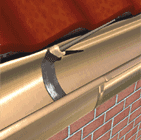
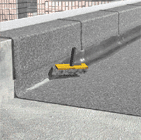
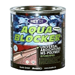
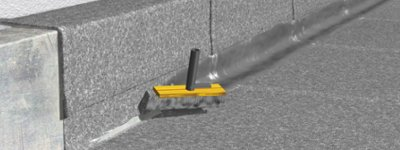

Применение
 |
 |
 |
Акваблокер (Aqua Blocker) – полимерное покрытие, характеризующееся крайне высокой адгезией к большинcтву оснований, среди которых бетон, дерево, пластики, металлы и другие типы поверхностей.
 |
 |
 |
После полимеризации материал Акваблокер обеспечивает долговременную защиту от влажности грунта (при нанесении на подземные поверхности), обеспечивает защиту от воды под давлением и бетоноагрессивных грунтовых вод.
Материал подходит для гидроизоляции подвалов, строений без подвалов, фундаментов, стыков, водосточных труб, различного типа кровли, кровельных швов и сопряжений. Используется также для закрепления бетонных, дренажных и и золяционных плит.
Акваблокер основан на модифицированных силан-полимерах. В состав продукта не входят битум, силикон, растворители, вода.
Aqua Blocker наносится на гидроизолируемую поверхность без предварительного грунтования. Акваблокер не требует защиты от влаги после нанесения в процессе полимеризации (застывания).

Поверхность перед нанесением желательно обезжирить, удалить пыль, ржавчину с металла. Поверхность может быть влажной, но не мокрой (без капель воды и луж). Материал перекрывает существующие в поверхности трещины до 5 мм шириной. Акваблокер поставляется в готовом к нанесению виде. Это однокомпонентный материал. Минеральное основание должно быть способны нести нагрузку, быть выровненным, без скопления гравия, без острых режущих кромок, усадочных рыхлостей.
Акваблокер нанаосится на гидроизолируюмую поверхность кистью или валиком с коротким ворсом в два слоя. Второй слой наносится после полной полимеризации первичного слоя (как минимум 4 часа при температуре при температуре 20 С).
Практический расход материала Акваблокер составляет 2 кг на один метр квадратный при нанесении в два слоя. Расход для укрепления изоляционных плит составляет 0,4 кг на один метр квадратный.

Материал может окрашиваться большинством типов красок.
Акваблокер не подходит для гидроизоляции деформационных и разделительных швов. Для таких швов лучше всего подойдет эластичный герметик на основе MS-полимера Bostik 2720MS, либо клей-герметик Bostik 2750MS.
Акваблокер наносится при температуре от +5°С и выше. При нанесении при более низких температурах следует прогревать поверхность горелкой, строительным феном, либо сооружать тепляки для проведения ремонтных работ. Акваблокер (при хранении в заводской упаковке) необходимо беречь от мороза.
Для получения полного технического описания материала, карты химической устойчивости материала Акваблокер, необходимых сертификатов в электронном виде, пожалуйста, сделайте соответствующий запрос по электронной почте или телефонам/факсам, указанным на данном сайте.